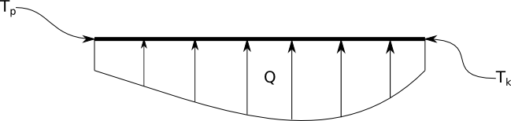
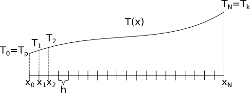
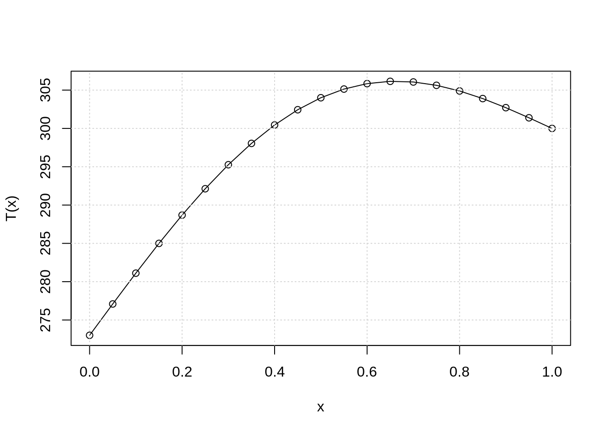

Pliki do wykorzystania w poniższym ćwiczenie można pobrać za pomocą poniższych linków:
W trakcie poniższych zajęć zapoznamy się z jedną z metod numerycznych służących do rozwiązywania układów równań liniowych. Metody te mają niesłychane znaczenie w kontekście praktycznie wszystkich zagadnień mechaniki, od kinematyki po złożone problemy mechaniki ośrodków ciągłych. Większość problemów z jakimi mamy doczynienia sprowadzają się do opisu zjawiska za pomocą jakiegoś typu równań, czy to algebraicznych czy różniczkowych. Człowiek, dzięki abstrakcyjnemu myśleniu, potrafi sobie radzić z różnymi ich typami. Niestety nie jest tak w przypadku komputerów. One, będąc maszynami liczącymi, świetnie sobie radzą w przypadku wykonywania prostych algebraicznych operacji. “Rozumieją” podstawowe pojęcie liczb oraz operacji algebraicznych, takich jak dodawanie, odejmowanie czy mnożenie. Jednak nie radzą już sobie z problemami bardziej złożonymi, takimi jak pojęcie funkcji ciągłej, różniczkowania. Oczywiście za pomocą odpowiedniego kodu możne w pewnym sensie nauczyć je dokonywania różniczkowania, ale to wciąż będzie wykonane za pomocą przekształceń algebraicznych. Biorąc pod uwagę zarówno zalety jak i ograniczenia takich maszyn, ludzkość skierowała swoją uwagę na rozwiązywanie problemów na sposób przybliżony. Nie staramy się już rozwiązać problemu opisanego za pomocą abstrakcyjnych tworów matematycznych, lecz przybliżamy je czymś co w wykazuje podobne cechy ale za to daje się rozwiązać przy wykorzystaniu komputerów. Jednym z przykładów takiego uproszczenia są metody poznane na poprzednich zajęciach - rozwiązywania równań nieliniowych czy jawnego całkowania równań różniczkowych. W tych przypadkach ostateczne rozwiązanie sprowadzało się do zapisania odpowiedniego schematu iteracyjnego. Oprócz tego typu metod zostały także opracowane takie których rozwiązywanie sprowadza się do rozwiązania bardzo dużego układu równań liniowych: \[ A \cdot x = b \] gdzie: \(A\) to macierz układu równań, \(x\) to wektor niewiadomych a \(b\) to wektor prawych stron układu równań. Jedną z takich metod jest metoda różnic skończonych. Jej sformułowanie polega na zastąpieniu odpowiednich pochodnych za pomocą różnic pomiędzy wartościami w ściśle przewidzianych punktach. Takie podejści w ostateczności prowadzi do przeformułowania problemu z równania różniczkowego do dużego układu algebraicznych równań liniowych (Takie przeformułowanie nazywamy dyskretyzacją równań). Rozwiązanie takiego układu - znalezienie nieznanego wektora niewiadomych \(x\) - wymaga dokonania odwrócenia macierzy \(A\) i przemnożenia jej lewostronnie z wektorem \(b\): \[ x = A^{-1}\cdot b\] Na zajęciach z algebry poznali Państow metodę odwracania maciarzy, która była oparta na obliczaniu wyznaczników dopełnień algebraicznych. Metoda ta, choć poprawna, jest niestety bardzo kosztowna. Aby obliczyć wyznacznik dopełnienia należy uprzednio znów obliczyć zbiór wyznaczników macierzy o rozmiarze o jeden mniejszej. W praktyce nie jesteśmy zainteresowani znalezieniem postaci odwrotności macierzy \(A\) tylko znalezieniem takiego \(x\) który będzie spełniał postawiony układ równań. Do takiego zadania z kolei bardzo dobrze się nadaje metoda eliminacji Gaussa. Metoda ta pozwala efektywnie obliczyć wartości wektora \(x\), lecz jawnie nie wyznacza odwrotności macierzy \(A\).
W daleszej części ćwiczeń wykonamy dwa zadania. Pierwsze zadanie będzie polegało na przygotowaniu odpowiedniego układu równań liniowych - czyli przygotowaniu macierzy układu \(A\) oraz wektora prawych stron \(b\). Obie te wielkości zostaną utworzone jako rezultat zastosowania metody różnic skończonych dla jednowymiarowego równania ustalonego przewodnictwa ciepła. W drugiej części ćwiczeń zajmiemy się rozwiązaniem tego układu równań za pomocą rzeczonej metody eliminacji Gaussa. Wynikiem rozwiązania takiego układu równań będzie rozkład wartości temperatury wzdłuż ogrzewanego pręta.
Na początek zajmijmy się przygotowaniem układu równań. Tak jak już na początku wspomnieliśmy powstanie on jako wynik dyskretyzacji równania przewodnictwa cieplnego: 
Problem który chcemy rozwiązać to rozkład temperatury w stalowym pręcie o długości \(L=1[m]\) i przewodności cieplnej \(\lambda=58[\frac{W}{mK}]\). Pręt jest ogrzewany za pomocą źródła ciepła zmieniającego się wzdłuż pręta - \(Q= - 10^4 \cdot sin(x\pi)[\frac{W}{m^3}]\). Ponadto na obu końcach pręta utrzymywne są stałe temperatura \(T_p=273[K]\) i \(T_k=300[K]\).
Proces ten opisuje następujące równanie: \[ \lambda \frac{d^2T}{dx^2} = Q(x) \] Biorąc pod uwagę stałą wartość przewodności możemy zapisać równanie jako: \[ \frac{d^2T}{dx^2} = \frac{Q(x)}{\lambda} \] Aby w pełni sformułować nasz problem należy wziąć pod uwagę warunki brzegowe postawione dla tego zagadnienia: \[ T(x=0) = T_p \] \[ T(x=L) = T_k \]
W celu rozwiązania tego problemu metodą różnic skończonych musimy go przeformułować do postaci układu równań liniowych. Na początek musimy dokonać dyskretyzacji przestrzennej zagadnienia. W tym celu musimy podzielić obszar obliczeniowy (długość pręta \(L=1[m]\)) [0, 1] na N odcinków, tak jak to pokazano no poniższym rysunku.

Punkty \(x_0, x_1, ..., x_N\) będziemy nazywali węzłami siatki obliczenniowej. Na tą chwilę, możemy założyć, że wszystkie punkty (łącznie jest ich N+1) są równo oddalone, tj. zachodzi \(x_{i+1}-x_i = h\), gdzie \(h\) ma stałą, ustaloną wartość równą: \[h = \frac{1}{N}\]
Zanim przejdziemy do dyskretyzacji równania, wprowadźmy następujące oznaczenie: \[ T = [T_0, T_1, T_2, T_3, ..., T_N]^T\] gdzie \(T\) jest wektorem przechowującym wartości rozwiązania (wartości funkcji \(T=T(x)\)) w kolejnych punktach siatki obliczeniowej.
Teraz przypomnijmy sobie jak wygląda definicja pochodnej funkcji: \[ \frac{dT}{dx} = \lim_{dx\to 0}{\frac{T(x+dx)-T(x)}{dx}}\]
Komputer nie potrafi operować na nieskończenie małych liczbach, dlatego należy wprowadzić przybliżenie w postaci skończonego przyrostu \(h\) (liczby małej, ale skończonej): \[\frac{dT}{dx} \approx \frac{T(x+h)-T(x)}{h}\]
W powyższym równaniu pojawia się pewien problem: dla jakiej wartości zmiennej \(x\) powyższe przybliżenie odwzorowuje pochodną, dla \(x\), \(x+h\) czy może \(x+\frac{h}{2}\)? Tak na prawdę powyższe przybliżenie będzie prawdziwe dla każdej z wymienionych wartości \(x\), z racji tego, że jest to tylko przybliżenie. Jeśli przyjmiemy, że jest to przybliżenie \(\frac{dT}{dx}(x)\) to skończymy z poznanym na poprzednich zajęciach jawnym schematem Eulera. Jeśli założymy, że jest to \(\frac{dT}{dx}(x+h)\) otrzymamy niejawny schemat Eulera (nie da się tak łatwo go zastosować jak to robiliśmy poprzednio). Nas jednak w tej chwili interesuje założenie, że taka różnica \(\frac{T(x+h)-T(x)}{h}\) odwzorowuje wartość pochodnej \(\frac{dT}{dx}(x+\frac{h}{2})\). Można udowodnić, że takie założenie, tzw. schematu centralnego, jest bardziej dokładne i w rezultacie daje nam schemat 2-giego rzędu dokładności (rząd dokładności określa z jaką potęgą zmienia się błąd przybliżenia przy zmianie wielkości kroku \(h\)).
Z racji tego, że nasz wyjściowy problem jest opisany przez drugą pochądną \(\frac{d^2T}{dx^2}\) spróbujmy zastosować powyższe przybliżenie ponownie. Wprowadźmy oznaczenie \(\frac{dT}{dx} = Y\), wtedy nasz wyjściowy problem będzie wyglądał tak: \[\frac{dY}{dx} = \frac{Q(x)}{\lambda}\] Zastosujmy nasze przybliżenie dla funkcji \(Y\) wykorzystując założenie o pochodnej centralnej : \[\frac{Y(x+\frac{h}{2})-Y(x-\frac{h}{2})}{h} = \frac{Q(x)}{\lambda}\] Zastosujmy ponownie pochodną centralną, ale teraz dla wartości pochodnej \(Y(x+\frac{h}{2})=\frac{dT}{dx}(x+\frac{h}{2})\) oraz \(Y(x-\frac{h}{2})\frac{dT}{dx}(x-\frac{h}{2})\): \[ Y(x+\frac{h}{2}) = \frac{T(x+h)-T(x)}{h}\\ Y(x-\frac{h}{2}) = \frac{T(x)-T(x-h)}{h} \] Podstawiając powyższe do wzoru wyjściowego otrzymamy: \[\frac{\frac{T(x+h)-T(x)}{h} - \frac{T(x)-T(x-h)}{h}}{h} = \frac{T(x+h)-2\cdot T(x)+T(x-h)}{h^2} = \frac{Q(x)}{\lambda}\]
Powyższy wzór jest przybliżeniem drugiej pochodnej za pomocą wartości rozwiązania w 3 punktach: \(x-h, x, x+h\). Powyższy schemat jest przybliżeniem drugigo rzędu, co zapewnia dużą dokładność odwzorowania pochodnej. Równanie to wykorzystamy w celu przygotowania odpowiedniego układu równań. Zanim przejdziemy do ostatecznego sformułowania układu równań przemnóżmy zaproponowane równanie przez \(h^2\): \[ T(x+h) - 2T(x) + T(x-h) = \frac{Q(x)}{\lambda}h^2 \] Wróćmy do obrazka przedstawiającego dyskretyzację. Weźmy pod uwagę węzeły o numerach od 1,…,N-1. Jeśli podstawimy kolejne \(x_i\) do równania powyżej, to otrzymamy zestaw następujących równań: \[ T_2 - 2 \cdot T_1 + T_0 = \frac{Q(x_1)}{\lambda} \cdot h^2 \\ T_3 - 2 \cdot T_2 + T_1 = \frac{Q(x_2)}{\lambda} \cdot h^2 \\ T_4 - 2 \cdot T_3 + T_2 = \frac{Q(x_3)}{\lambda} \cdot h^2 \\ . \\ . \\ . \\ T_N - 2 \cdot T_{N-1} + T_{N-2} = \frac{Q(x_{N-1})}{\lambda} \cdot h^2 \] Umyślnie pominięte zostały węzły \(0\) i \(N\), ponieważ dla nich trudno jest napisać równanie, skoro nie istnieją węzły \(x_{-1}\) i \(x_{N+1}\) - nimi zajmiemy się później. Teraz należy zwrócić uwagę na samą postać uzyskanych równań. Każde z nich wiąże 3 niewiadome wielkości, oznaczane jako \(T_{i+1}, T_{i}, T_{i-1}\). Są to wartości poszukiwanej funkcji w odpowiadających im węzłach. Wprowadźmy jeszcze jedno oznaczenie: \[ F_i = \frac{Q(x_i)}{\lambda} \cdot h^2\] Wtedy kolejne równanie będzie miało postać: \[ T_{i+1} - 2 \cdot T_i + T_{i-1} = F_i \] Jak widać, jest to proste równanie liniowe wiążące 3 niewiadome i znaną wielkość \(F_i\). Jeśli zbierzemy wielokści \(T_i\) w jednym dużym wektorze \(T\), tak jak to przyjęliśmy na początku, zbiór równań dla \(i=1,2,..N-1\) możemy zapisać w postaci macierzowej: \[ K \cdot T = F\] gdzie \(K\) określa odpowiednią macierz współczyników: \[ \begin{bmatrix} 1 & -2 & 1 & 0 & \dots & \dots & \dots & 0\\ 0 & 1 & -2 & 1 & 0 & \dots & \dots & 0\\ 0 & 0 & 1 & -2 & 1 & 0 & \dots & 0\\ \vdots & \ddots & \ddots & \ddots & \ddots & \ddots & \ddots & 0\\ 0 & \dots & \dots & \dots & \dots & & 1 & -2 & 1 \end{bmatrix} \times \begin{bmatrix} T_0 \\ T_1 \\ T_2 \\ \vdots \\ T_{N} \end{bmatrix} = \begin{bmatrix} F_1 \\ F_2 \\ \vdots \\ F_{N-1} \end{bmatrix} \]
Powyższy układ równań nie jest jeszcze skończony. Jak łatwo zauważyć, macierz nie jest kwadratowa, poniważ brakuje nam dwóch równań odpowiadających węzłom \(x_0\) i \(x_N\). Jest to miejsce w którym powinniśmy wziąć pod uwagę warunki brzegowe. Zgodnie z postawionym problemem mamy: \[ T(x=x_0) = T_0 = T_p = 273\\ T(x=x_N) = T_N = T_k = 300 \] W zasadzie powyższe stwierdzenie jest wystarczające aby uznać je za równanie, które w istocie jest wyraża równość. Można jednak zrobić też inaczej. Uznać wartości \(T_0\) i \(T_N\) jako znane i wyeliminować pierwszą oraz ostatnią kolumnę z układu równań. Iloczyn odpowiedniego wspołczynnika i znanej wielkości powinien wtedy powędrować do wektora prawych stron \(F\). W naszym przypadku, z uwagi na uproszczenie kodu, po prostu dopiszemy 2 dodatkowe równania od układu równań modyfikując macierz oraz wektor prawych stron:
\[ \begin{bmatrix} 1 & 0 & 0 & 0 & \dots & \dots & \dots & 0\\ 1 & -2 & 1 & 0 & \dots & \dots & \dots & 0\\ 0 & 1 & -2 & 1 & 0 & \dots & \dots & 0\\ 0 & 0 & 1 & -2 & 1 & 0 & \dots & 0\\ \vdots & \ddots & \ddots & \ddots & \ddots & \ddots & \ddots & 0\\ 0 & \dots & \dots & \dots & \dots & 1 & -2 & 1\\ 0 & \dots & \dots & \dots & \dots & \dots & \dots & 1\\ \end{bmatrix} \times \begin{bmatrix} T_0 \\ T_1 \\ T_2 \\ \vdots \\ T_{N-1}\\ T_{N} \end{bmatrix} = \begin{bmatrix} 273 \\ \frac{Q(x_1)}{\lambda} \cdot h^2 \\ \frac{Q(x_2)}{\lambda} \cdot h^2 \\ \vdots \\ \frac{Q(x_{N-1})}{\lambda} \cdot h^2 \\ 300 \end{bmatrix} \]
Utwórz zmienną określającą macierze \(K\) wykorzystując tablice dwuwymiarowe statyczne. Zadeklaruj stały rozmiar na N=6 (użyj instrukcji const int N=...; lub defklaracji preprocesora #define aby sterować rozmiarem tablicy statycznej). Pamiętaj, że liczba punktów dyskretyzacji jest równa \(N+1\) dla zaprezentowanego przykładu.
Utwórz tablicę statyczną określającą wektor prawych stron \(F\) oraz poszukiwanego rozwiązania \(T\).
Uzupełnij macierz \(K\) zgodnie z zaprezentowaną powyżej postacią.
Sprawdź czy uzyskana macierz jest odpowiednio utwrzona.
Przejdźmy teraz do ostatniej części ćwiczeń - rozwiązania układu równań. W wyniku tego działania otrzymamy tablicę \(T\) przechowującą wartości rozwiązania problemu przewodnictwa ciepła w z góry narzuconych punktach.
Zastosuj funkcję realizującą metodę eliminacji Gaussa do rozwiązania powyższego układu równań. Nagłówek funkcji jest postaci void gauss(int n, double A[][N], double b[], double x[]), gdzie n to liczba równań, A to macierz układu równań, b - wektor prawych stron, zaś x to wektor, w którym zostanie zapisany wynik.
Sporządź wykres funkcji \(T=T(x)\) wykorzystując bibliotekę graficzną. Dla liczby podziałów N=20 (21 punktów) powinieneś uzyskać podobny wynik do zaprezentowanego poniżej 
Przetestuj działanie programu dla różnych n (nie przesadź, ponieważ metoda gaussa nie jest metodą optymalną do tego typu problemów).
Na podstawie funkcji gauss napisz funkcję wyznaczającą macierz trójkątną. Następnie wykorzystując tę macierz, oblicz wartość wyznacznika macierzy \(K\).